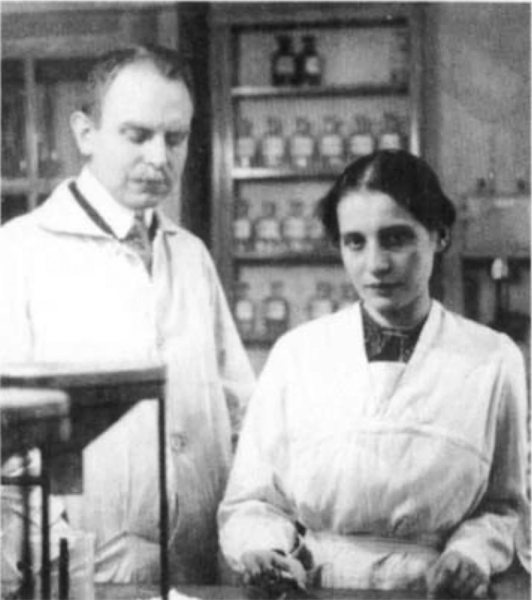
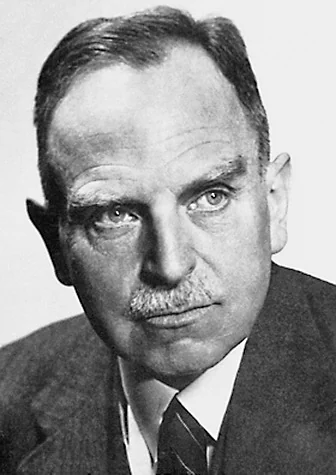
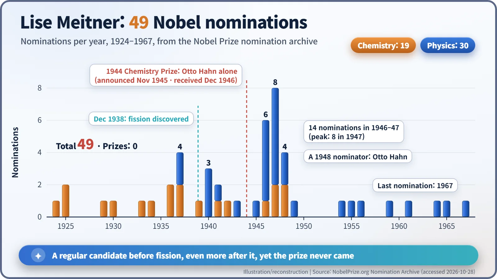
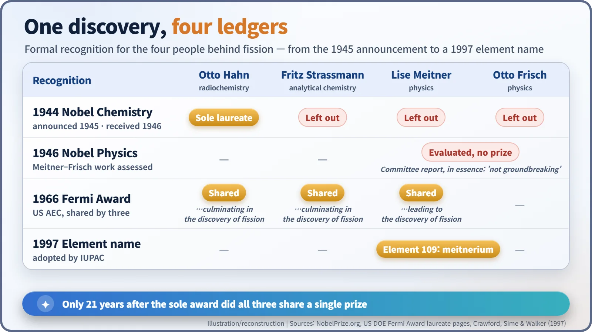
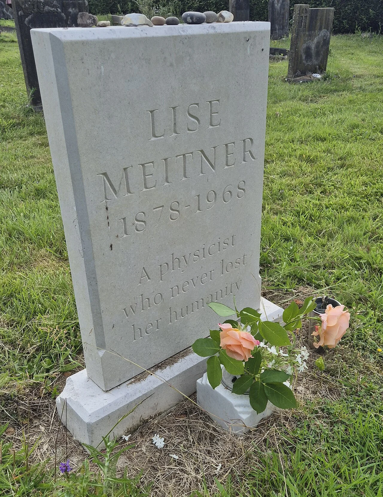

Nuclear History · 075
Forty-Nine Nominations, No Prize — Otto Hahn's Fission Nobel and the Exclusion of Lise Meitner
Committee boundaries, wartime isolation and haste, not one single cause, kept a co-discoverer of fission off the Nobel stage; the Fermi Award and element 109 came later.
Lise Meitner was nominated for a Nobel Prize 49 times and never won. The 1944 Nobel Prize in Chemistry for the discovery of nuclear fission, announced in November 1945, went to Otto Hahn alone. Records opened half a century later show why: committee structures, wartime isolation and hasty judgement, more than any single cause.
Forty-nine nominations
Look up Lise Meitner (1878–1968) in the Nobel Prize nomination archive and the entry opens with one terse line: "Nominee in 49 nominations." Between 1924 and 1967 she was put forward 19 times for the chemistry prize and 30 times for physics. Her nominators included Max Planck, Niels Bohr and James Franck. Nowhere in that record does the word "laureate" appear. The Nobel Prize for nuclear fission, a discovery she helped to make, went to her long-time colleague Otto Hahn (1879–1968), and to him alone. [2] [1]

A laureate who learned the news from a newspaper
First, the dates, because they trip people up. This was the Nobel Prize in Chemistry for 1944. The Royal Swedish Academy of Sciences postponed its decision that year, and the award was announced only in mid-November 1945, after the war had ended (sources give either 15 or 16 November). The citation read "for his discovery of the fission of heavy nuclei", and the prize was not shared. [1]
The winner could not be reached. Hahn was being held at Farm Hall, a country house near Cambridge, England, together with Werner Heisenberg and other German nuclear scientists. Their location was secret, so not even a congratulatory telegram could be sent, and Hahn reportedly learned of his prize from a British newspaper. He received the medal in Stockholm on 10 December 1946. In short: a 1944 prize, announced in 1945, handed over in 1946. [7]

A discovery with more than one owner
The discovery itself can be told briefly. Meitner had worked alongside Hahn for more than 30 years before she fled Nazi Germany for Sweden in July 1938. That December, in Berlin, Hahn and the analytical chemist Fritz Strassmann (1902–1980) found barium among the products of uranium bombarded with neutrons. Meitner and her nephew Otto Frisch (1904–1979) then explained what it meant: the uranium nucleus had split in two, releasing about 200 million electronvolts (200 MeV) of energy. It took both the chemical evidence and the physical interpretation to complete the discovery.
Why did the committee choose one man?
The committee had its reasons, and they deserve a fair hearing. Work on radioactive elements had traditionally been treated as chemistry, and the decisive proof was the chemical identification of barium. The chemistry committee's expert reports, by Theodor Svedberg and Arne Westgren, praised Hahn's chemistry but did not regard the Meitner–Frisch interpretation as exceptional. Strassmann, although a co-author of the key paper, lost out to a long-standing practice of rewarding the most senior scientist in a collaboration. [3] [7]
The war was a factor too. After 1936 the Nazi regime had forbidden Germans to accept Nobel Prizes, and the Academy held the 1944 decision over for a year. In the autumn of 1945 it set aside a suggestion to postpone again and went ahead with the award.
Meitner still had a chance at the physics prize. Her nominations peaked in exactly those years: 14 in 1946 and 1947 together. But in 1946 the physics committee's assessment judged her work with Frisch not groundbreaking, and argued that the physics prize was meant for experimental rather than theoretical achievement. [4]

The files are opened
Nobel deliberations are sealed for 50 years. When the records became available in the 1990s, the historians Elisabeth Crawford, Ruth Lewin Sime and Mark Walker examined them and published their findings in 1996 and 1997. In Physics Today they concluded that Meitner missed out because "the structure of the Nobel committees was ill-suited to assess interdisciplinary work", because the chemistry committee's members "were unable or unwilling to judge her contribution fairly", and because during the war the Swedish scientists "relied on their own limited expertise". Her exclusion, they wrote, "may well be summarized as a mixture of disciplinary bias, political obtuseness, ignorance, and haste." [3] [4]
That is why the popular one-line explanation, "she was left out because she was a woman", needs care. Being a Jewish woman scientist in exile certainly helped to isolate her. But what the historians identified was a combination of disciplinary walls, wartime isolation and rushed judgement.
Opinions about Hahn are divided as well. He helped Meitner escape in 1938, and the archive shows that in 1948 he himself nominated her for the physics prize. Yet he has also been criticised for describing fission after the war as a purely chemical discovery, blurring her share. Meitner's own view, in a letter quoted in English translation, was generous but firm: "Surely Hahn fully deserved the Nobel Prize for chemistry. There is really no doubt about it. But I believe that Frisch and I contributed something not insignificant to the clarification of the process of uranium fission—how it originates and that it produces so much energy and that was something very remote to Hahn." [2] [6]
Names that arrived late
In 1966 the US Atomic Energy Commission gave the Enrico Fermi Award jointly to Hahn, Meitner and Strassmann. Meitner was too ill to attend the ceremony in Vienna; the award was presented to her separately in Cambridge that October. Even the wording of the citations is worth a second look. Hahn's and Strassmann's work is described as "culminating in the discovery of fission"; Meitner's as "leading to the discovery of fission". [5]

A square on the periodic table
Meitner died in Cambridge in October 1968. Element 109, first made at a heavy-ion laboratory near Darmstadt, Germany, in 1982, was officially named meitnerium (Mt) in 1997. She never held a Nobel medal, but one square of the periodic table now carries her name. Scientific credit, it turns out, is not settled at the laboratory bench alone.
